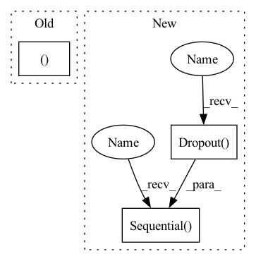

Pattern ID :302

Before Change
def __init__(self, number_class_symbols, in_channels=3, rnn_size=128):
super().__init__()
self.maxpooling_22 = nn.MaxPool2d(2, 2)
self.maxpooling_21 = nn.MaxPool2d((2, 2), (2, 1), (0, 1))
self.layer1 = self._make_layer(in_channels, 64, 3, 1, 1)
self.layer2 = self._make_layer(64, 128, 3, 1, 1)
self.layer3 = self._make_layer(128, 256, 3, 1, 1)
After Change
self.avg_pool = nn.AdaptiveAvgPool2d(
(time_feature_count, time_feature_count))
self.bilstm = BiLSTM(time_feature_count, lstm_hidden, lstm_len)
self.classifier = nn.Sequential(
nn.Linear(lstm_hidden * 2, time_feature_count),
nn.GELU(),
nn.Dropout(0.1),
nn.Linear(time_feature_count, number_class_symbols)
)
def forward(self, x):
x = self.feature_extractor(x)
b, c, h, w = x.size()
In pattern: SUPERPATTERN
Frequency: 3
Non-data size: 3
Instances
Fragment ID: 1201155
Project Name: ai-forever/ocr-model
Commit Name: db55ee227e236d8da2dc2323804c42dd7f6b14b4
Time: 2021-09-28
Author: kalinin@sent.com
File Name: ocr/src/models.py
Class Name: CRNN
Method Name: __init__
Parent Class: nn.Module
Fragment ID: 1201158
Project Name: sberbank-ai/ocr-model
Commit Name: db55ee227e236d8da2dc2323804c42dd7f6b14b4
Time: 2021-09-28
Author: kalinin@sent.com
File Name: ocr/src/models.py
Class Name: CRNN
Method Name: __init__
Parent Class: nn.Module
Fragment ID: 1201160
Project Name: janspiry/image-super-resolution-via-iterative-refinement
Commit Name: 1a5a8bc409a8b8e072eb2bf25330d4662fd279c4
Time: 2021-08-09
Author: lw_jiang@foxmail.com
File Name: model/ddpm_modules/unet.py
Class Name: NIN
Method Name: __init__
Parent Class: nn.Module